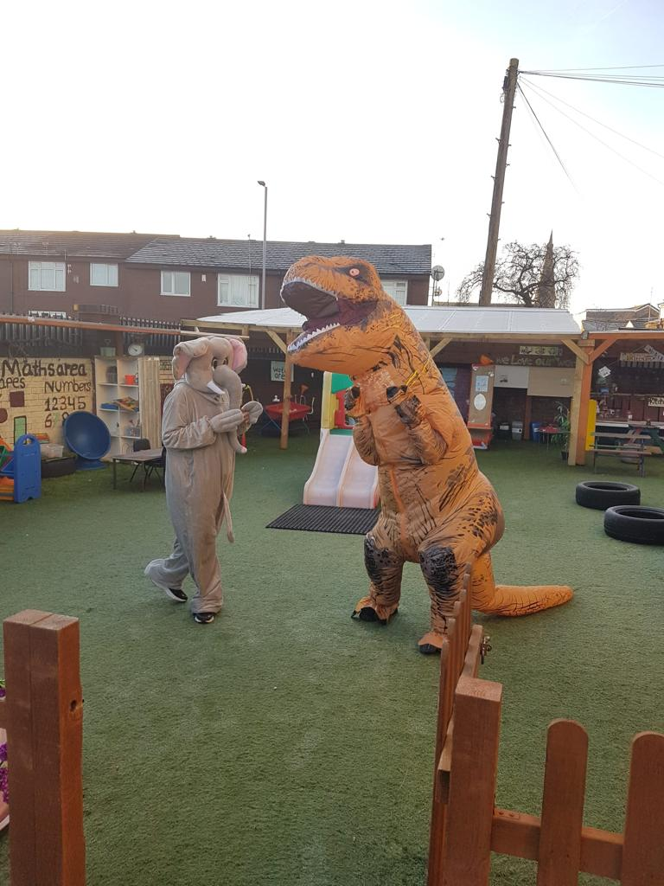

Early childhood education is changing quietly but meaningfully across the UK. In 2026, preschools are no longer just places for supervision. They are thoughtful learning environments designed around children’s emotional, social, and cognitive needs. These early years education trends reflect how UK preschool education is evolving to support confident learners from the very start, something many parents notice when exploring nurseries like Lemon Tree Preschool.
Families increasingly want to understand how early years education is changing in the UK, not just what children learn, but how they feel while learning. The future of preschool education in the UK now centres on wellbeing, play, inclusion, and strong partnerships between parents and educators. These shifts shape everything that follows.
The Biggest Early Years Education Trends Influencing UK Preschools in 2026
Step into a modern nursery toda,y and the difference feels immediate. Children move between activities with purpose. Educators observe closely rather than control every moment. These preschool trends UK highlight a calmer, more responsive approach to early years learning UK that many settings now adopt.
At nurseries such as Lemon Tree, this philosophy is reflected in how learning spaces and experiences are designed around children rather than rigid schedules, something parents often discover when reading about the nursery’s values on the About Us page. These broad shifts set the foundation for bigger changes in practice.
Why Preschool Education in the UK Is Changing So Rapidly
Research into early brain development has reshaped early childhood education UK. Studies show that emotional security, communication, and social interaction matter more than early academic pressure. As a result, nurseries are rethinking how learning happens each day.
Many UK settings now prioritise nurturing environments, health, and safety as essential parts of learning. Parents often see this reflected in clear safeguarding and wellbeing practices outlined on pages like Lemon Tree Preschool’s Health and Safety information, which supports trust and reassurance.
These changes naturally lead to child-led learning becoming central.
Child-Led Learning Becoming the Core of Modern Early Years Practice
Child-led learning allows children to explore interests at their own pace while educators gently guide progress. This approach sits at the heart of modern early years education and supports independence, confidence, and curiosity.
In practice, this means children choose activities that interest them, whether building, telling stories, or engaging in creative play. Nurseries that follow the EYFS framework, like Lemon Tree Preschool, use its Curriculum approach to support each child’s development without pressure.
Play then becomes the natural vehicle for learning.


Play-Based Learning Trends Redefining Preschool Classrooms
Play-based learning in early years is now intentional rather than informal. Activities are planned to support language, problem-solving, and cooperation while still feeling fun. This answers a common parent question: Is play-based learning used in UK preschools? The answer is a clear yes.
For example, daily routines that blend play and structure help children feel secure while learning essential skills. You can see how this balance works in real settings by exploring a typical Daily Routine followed by UK nurseries.
Technology also plays a small but thoughtful role.
Technology in Early Years Education: Smart Tools, Balanced Use
Technology in early years education is used carefully. Instead of screens dominating learning, digital tools support observation, communication, and inclusion. This reassures parents concerned about screen time in UK preschools.
Many nurseries now use digital platforms to share updates with families, strengthening the home learning connection. Parents interested in how communication works often explore a nursery’s contact and engagement methods through pages like Contact Us, which support open dialogue.
Wellbeing remains the strongest driver behind these trends.
Focus on Emotional Wellbeing and Mental Health in Preschool Children
Emotional wellbeing in early years has moved to the centre of nursery life. Children are supported to recognise emotions, build resilience, and form secure relationships. This focus helps children feel safe, which directly supports learning.
Settings that prioritise wellbeing often reflect this through calm environments, consistent routines, and trained staff. Families can see how these values translate into daily practice when reviewing nurseries’ safeguarding and care approaches, often highlighted across their main information pages.
Inclusion builds naturally from this foundation.
Inclusive Early Years Education Trends Supporting Every Child
Inclusive early years education ensures every child feels valued. Nurseries are adapting environments to support SEN, language differences, and cultural diversity without separating children from peers.
This approach supports social and emotional development in nursery settings and helps children learn empathy early. Parents exploring whether a nursery can support their child’s individual needs often look for clarity in admissions and registration processes, such as the Register Child page.
Environmental awareness is another growing theme.
Sustainability and Eco-Conscious Learning in UK Preschools
Sustainability in early years education is introduced gently through outdoor play, recycling, and caring for nature. These activities support physical development while building awareness.
Outdoor exploration and creative play are often showcased visually, helping parents understand how sustainability fits into daily learning. Many families enjoy browsing real-life examples through the nursery Gallery pages that show children learning through hands-on experiences.
These practices align closely with EYFS guidance.
How Updated EYFS Guidance Is Shaping Preschool Trends in the UK
EYFS changes in 2026 continue to prioritise holistic child development over formal testing. Communication, physical development, and personal wellbeing remain key learning areas.
Nurseries that clearly explain how they follow EYFS give parents confidence in their approach. Information about learning areas and outcomes is often detailed within curriculum sections such as Lemon Tree Preschool’s EYFS-based curriculum, which reflects national guidance.
Parental involvement also plays a growing role.
The Growing Role of Parents in Early Years Learning
Parents are now active partners in early years learning. Regular updates, shared observations, and home learning ideas help children experience consistency between nursery and home.
Many nurseries support this partnership by sharing helpful articles and guidance. Parents interested in learning more often explore related content through a nursery’s blog section, which supports informed decision-making.
Strong partnerships rely on skilled educators.
Training and Professional Development Trends for Early Years Educators
Ongoing professional development helps educators respond to changing needs. Training now focuses on inclusion, emotional wellbeing, and child development rather than rigid instruction.
Well-trained staff create environments where children thrive naturally. This commitment is often reflected in how nurseries structure sessions and learning experiences, which parents can explore when reviewing practical details such as Sessions and Fees.
Seeing these trends in action brings them to life.
Real Examples of How UK Preschools Are Adapting to 2026 Trends
In one UK preschool, mornings begin outdoors. Children choose activities while educators observe communication skills and social interaction. Parents receive daily updates and photos. Learning feels calm and purposeful, not rushed.
This reflects broader nursery education trends shaping daily routines across the UK.
Traditional Preschool Approaches vs Modern Early Years Education Trends
|
Traditional Approach |
Modern Practice |
|
Adult-led instruction |
Child-led learning in preschools |
|
Fixed schedules |
Flexible routines |
|
Limited parent involvement |
Strong home and nursery partnership |
|
Outcome-focused |
Wellbeing and development-focused |
Understanding these differences helps parents choose wisely.
Final Takeaway
These early years education trends point to a clear and positive direction for 2026. UK preschools are moving away from rigid structures and focusing more on children as individuals. For parents, choosing a nursery aligned with these values means giving their child a confident, secure, and well-supported start to their learning journey.
FAQs
What are the most important early years education trends in 2026?
Child-led learning, emotional wellbeing, inclusion, and balanced technology use are shaping how UK preschools operate. These trends focus on supporting children’s development in a calm, engaging, and age-appropriate way.
How do preschool trends in the UK affect my child’s development?
Modern preschool trends help children build confidence, communication skills, and emotional awareness. Learning through play and positive relationships supports healthy development and better readiness for school.
Are UK preschools using more technology with young children?
Yes, but technology is used thoughtfully. Most settings use it for observations, parent communication, and planning rather than extended screen time for children.
How does EYFS influence modern early years education trends?
EYFS guidance shapes how preschools plan learning, assess progress, and support wellbeing. It encourages learning through play, strong relationships, and a focus on the whole child.
Should parents prioritise play-based learning when choosing a preschool?
Yes. Research consistently shows that play-based learning supports long-term learning, social skills, and emotional development better than early academic pressure.